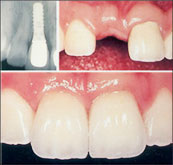
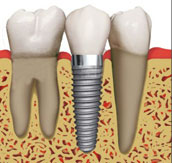

Dental implants are artificial tooth replacements used to counter tooth loss. Although you have a number of restorative options for the treatment of missing teeth, none have proven to be as functionally effective and durable as implants. In many cases, dental implants may be the only logical choice for the restoration of all necessary functionality of the teeth and supporting structures. Strong, durable and natural in appearance, implants are among the most successful dental procedures performed.

TOOTH LOSS
Teeth are lost because of:
1. Tooth decay
2. Root canal failure
3. Periodontitis (gum disease]
4. Trauma to the mouth
5. Excessive wear and tear
6. Congenital defects
People who have lost teeth might feel too self-conscious to smile or talk. Additionally, biting irregularities caused by tooth loss can have a negative effect on eating habits and this can lead to secondary health problems like malnutrition. Regardless of the nature of problems related to tooth loss, dental implants may provide a simple remedy with proven results.
ADVANTAGES OF IMPLANT DENTISTRY
Dental implants are stronger and more durable than their restorative counterparts
(bridges and dentures). Implants offer a permanent solution to tooth loss. Additionally,
implants may be used in conjunction with other restorative procedures for maximum
effectiveness. For example, a single implant can serve to support a crown replacing a
single missing tooth. Implants can also be used to support a dental bridge for the
replacement of multiple missing teeth. and can be used with dentures to increase
stability and reduce qum tissue irritation.
THE DENTAL IMPLANT PROCEDURE
Today's dental implants are virtually indistinguishable from other teeth. This appearance
is aided in part by the structural and functional connection between the dental implant
and the living bone. Implants are typically placed in a single sitting but require a period
of osseointegration.

Osseointegration is the process by which direct anchorage of a dental implant root and the bone of the jaw occurs. Osseointegrated implants are the most commonly used and successful type of dental implant. An osseointegrated implant takes anywhere from six weeks to six months to anchor and heal, at which point we can complete the procedure with the placement of a crown. Once the implant has anchored with the jawbone, an artificial prosthesis may be attached and the process is done. If osseointegration does not occur, the implant will fail.
DETAILED PROCEDURAL STEPS ARE AS FOLLOWS:
Preparing the Jaw for Implantation: A dental implant is commonly composed of a titanium
material screw and a crown. A small-diameter hole (pilot hole) is drilled at edentulous
(where there is no tooth) jaw sites in order to guide the titanium screw that holds a
dental implant in place.
Placement of the Implant: After the initial pilot hole has been drilled into the appropriate jaw site, it is slowly widened to allow for placement of the implant screw. Following this placement, a protective cover screw is placed on top to allow the implant site to heal and the dental implant to anchor (osseointegration). After a period of time, the protective cover is removed and a temporary crown is placed on top of the dental implant. The temporary crown serves as a template around which the gum grows and shapes itself in a natural way. The process is completed when the temporary crown is replaced with a permanent crown.
SUCCESS RATE OF DENTAL IMPLANTS
Dental implants are among the most successful procedures in dentistry. There is no
guarantee that an implant procedure will be successful, but studies have shown a five-
year success rate of 95% for lowerjaw implants and 90% for upper jaw implants. The
success rate for upper jaw implants is slightly lower because the upper jaw (especially
the posterior section) is less dense than the lower jaw, making successful implantation
and osseointegration potentially more difficult to achieve. Lower posterior implantation
has the highest success rate for all dental implants.
Dental implants may fail for a number of reasons. The cause is often related to a failure in the osseointegration process. For example, if the implant is placed in a poor position, osseointegration may not take place. Dental implants may break or become infected (like natural teeth) and crowns may become loose.
If you are a smoker who is considering a dental implant, we will likely advise you to give up smoking before undergoing the process because smokers face a higher risk of implant failure. Since the procedure can be extremely expensive, you risk wasting your money on dental implants if you do not give up the habit.
On the plus side, dental implants are not susceptible to the formation of cavities; still, poor oral hygiene can lead to the development of peri-implantitis around dental implants. This disease is tantamount to the development of periodontitis (severe gum disease) around a natural tooth.